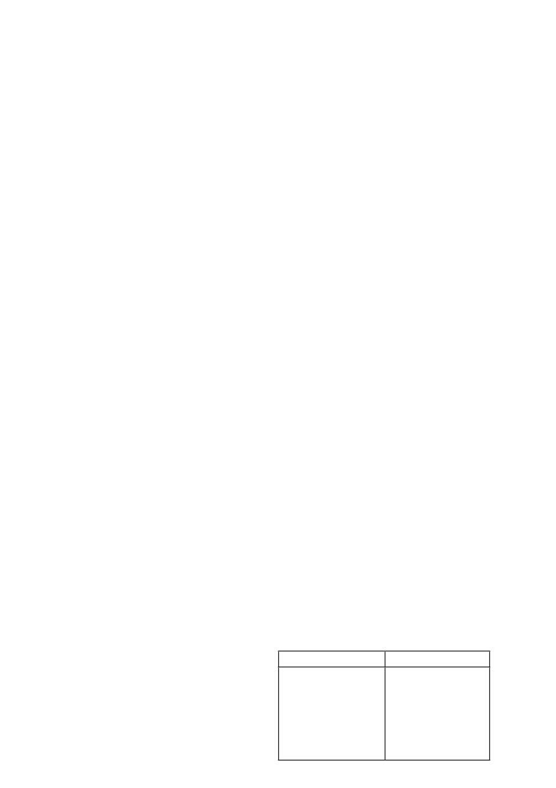

nie toegedien word nie. Raadpleeg ‘n verteenwoordiger van
Syngenta of verspreider indien twyfel bestaan.
5. PRODUKEIENSKAPPE
Beide aktiewe bestanddele, siprokonasool en propikonasool,
word grotendeels binne ‘n uur deur die assimilerende dele van
die plant geabsorbeer en akropetaal (opwaarts) deur die xileem
vervoer. Die sistemiese translokasie dra by tot die goeie versprei-
ding van die aktiewe bestanddele in die plantweefsel en verhoed
dat dit afgewas word.
6. GEBRUIKSAANWYSINGS
Gebruik slegs soos aangedui
6.1
VERENIGBAARHEID
Die verenigbaarheid van
ARTEA
met ander produkte kan beïn-
vloed word deur die formulasie van die betrokke produkte asook
deur die kwaliteit van die verdunningswater. Aangesien die for-
mulasie van produkte kan verander sonder die medewete van
Syngenta en die kwaliteit van die water ook van plaas tot plaas
kan verskil, moet ‘n fisiese verenigbaarheidstoets altyd uitgevoer
word voordat gespuit word.
ARTEA
is verenigbaar met die mee-
ste swamdoders, insektemiddels en blaarvoedings wat algemeen
in die verskillende gewasse gebruik word.
6.2
MENGINSTRUKSIES
Plaas deksel terug na gebruik
Vul die spuittenk
1
/
4
-
1
/
3
met skoon water, begin roering en voeg
die benodigde hoeveelheid
ARTEA
by die water in die spuittenk.
Roer aanhoudend terwyl gemeng word totdat die finale volume
water bereik is. Wanneer die tenk met water gevul word moet die
waterpyp altyd bokant die wateroppervlak wees om te verseker
dat produk nie teruggesuig word nie.
Die spuitmengsel moet tydens vermenging en toediening
voortdurend in roering gehou word.
Tenkmengsels moet onmiddellik uitgespuit word en nie
toegelaat word om in die spuittenk te staan nie.
6.3
TOEDIENING
Invloed van reën op toediening:
Indien dit reën binne twee uur na toediening, moet die bespuiting
herhaal word.
6.3.1 Grondtoediening
ARTEA
kan met konvensionele hoëvolume spuitapparaat toege-
dien word. Kalibreer die apparaat voor toediening om te verseker
dat die regte dosis gelewer word. Die verspreiding van die spuit-
mengsel moet egalig oor die teikengebied wees.
Verseker goeie bedekking van die hele plant (insluitende die
stamme en blare) deur die gebruik van genoeg water en geskikte
toedieningsapparaat.
6.3.2 Lugtoediening
Verhoed spuitstof wegdrywing ten alle tye.
Hierdie produk mag slegs deur lugbespuiting toegedien word
deur ‘n geregistreerde lugbespuiting operateur met ‘n korrek
gekalibreerde, geregistreerde vliegtuig volgens die instruksies van
SANS 10118 (Aerial Application of Agricultural Remedies). Dit
is belangrik om te verseker dat die spuitmengsel eweredig oor
die teikenarea versprei word en dat die verlies aan spuitmeng-
sel tydens toediening tot ‘n minimum beperk word. Dit is dus
be
langrik om aan die volgende kriteria te voldoen:
a) Toediening parameters:
•
Volume:
‘n Volume van 30 - 40
l
/ha word aanbeveel.
Aangesien hierdie produk nie teen ‘n verlaagde volume getoets
is nie, kan die registrasiehouer nie effektiwiteit waarborg, of
verantwoordelik gehou word vir enige nadelige effekte indien
hierdie produk teen ‘n laer volume, as hierbo aanbeveel, uit die
lug toegedien word nie.
ARTEA
®
/ 2
•
Druppelbedekking
: ‘n Druppelbedekking van 25 - 30 drup-
pels/cm² moet op die teikenarea herwin word.
•
Druppelgrootte
: ‘n Druppelspektrum met ‘n VMD van 280
- 300 mikrons word aanbeveel. Verseker dat die produksie
van fyn druppels (kleiner as 150 mikrons - hoë drywing en
verdampingspotensiaal) tot ‘n minimum beperk word.
•
Vlieghoogte
: Die hoogte van die spuitbalk moet op 3 - 4
meter bo die teiken gehandhaaf word. Moet nie spuit wanneer
die vliegtuig aan die bopunt is van, of tydens ‘n duik nie, of
terwyl dit uitklim of draai nie.
b) Toerusting:
•
Gebruik geskikte spuitapparaat (hidroliese of roterende spuit-
koppe) wat die vereiste druppelgrootte en bedekking sal
produseer, maar wat die minste verlies van produk deur
endodrywing (binne die teikenarea) of eksodrywing (buite die
teikenarea) sal verseker.
•
Die operateur moet ‘n stelsel kies wat ‘n druppelspektrum met
die kleinste moontlike relatiewe span sal produseer.
•
Al die spuitneuse / atomiseerders moet in die binnste 60% -
75% van die vlerkspan geplaas word om die beweging van
druppels in die vlerkvorteks in te beperk.
c) Meteorologiese toestande:
•
Die verskil in temperatuur tussen die nat- en droëboltermo-
meter van ‘n swaaihigrometer, moet nie 8°C oorskry nie. Die
byvoeging van ‘n geskikte anti-evaporant word aanbeveel indien
die VMD van die druppels kleiner as 200 - 250 mikrons is.
•
Spuit slegs wanneer die windspoed 5 - 15 km/uur is.
•
Hierdie produk moet nie uit die lug toegedien word tydens
onstabiele, turbulente toestande gedurende die hitte van die
dag wanneer styg en dalende konveksie windbeweging plaas-
vind nie.
•
Dit is belangrik om daarop te let dat die lugtoediening van
hierdie produk onder temperatuur inversie toestande (deur bo
of binne die inversie laag te spuit) tot die volgende probleme
mag aanleiding gee:
- Verlaagde effektiwiteit aangesien die druppels as ‘n wolk in
die lug bly hang en moontlik verdamp (onvoldoende bedek-
king op teiken).
- Skade aan ander nie-teiken gewasse of ander sensitiewe
areas a.g.v die wegdryf van die spuitwolk tot by daardie
area.
•
Tydens die volgende klimatologiese toestande kan wegdry-
wing verder as 3 - 5 km van die naaste lugtoediening gevind
word:
- Bewolkte weerstoestande met ‘n relatiewe humiditeit meer as
80% en ‘n lae lug beweging van minder as 5 km/uur. Onder
sulke toestande moet lugtoediening
NIE
gedoen word nie.
•
Verseker dat die vliegtuig operateur weet watter lande om te
bespuit. Voorsien hom van die presiese identifikasie van die lande
wat bespuit moet word verkieslik in die vorm van kaarte of GPS
koordinate. Dui ook omgewings sensitiewe areas of sensitiewe
aangrensende gewasse, byekorwe, boerderye en water bronne
aan wat moontlik deur bespuitings beïnvloed kan word.
•
Verkry die versekering van die vliegtuigoperateur dat daar aan
al bogenoemde vereistes voldoen sal word en dat alle rele-
vante data in ‘n logboek aangeteken sal word vir toekomstige
gebruik.
7. AANBEVELINGS
Vir die beste resultate bestudeer die afdelings onder 3 en 6.1 tot
6.3 sorgvuldig.
7.1
KORING EN GARS
GEWAS / SIEKTE
DOSIS
GARS
Blaarvlek
(
Rhynchosporium secalis
)
Netvlek
(
Pyrenophora teres
)
Blaarroes
(
Puccinia hordei
)
Poeieragtige skimmel
(
Erysiphe graminis
)
Grond- en lugtoediening
400 - 500 m
l
/ha
